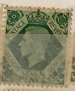
| SOURCE | TITLE| IMAGE MATCH | click to source page |
| eBay UK | George VI seven pence green stamp | eBay UK | 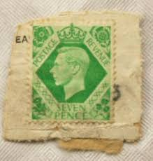 |
| eBay | Travelstamps:1938 Great Britain Stamp Scott #244,7p, Green “George VI" MNH OG | eBay | 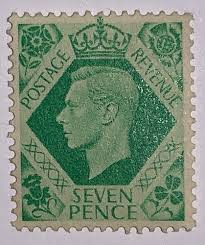 |
| eBay Australia | GBK-416) 1937 Great Britain 7d GREEN KGVI (B) | eBay Australia | 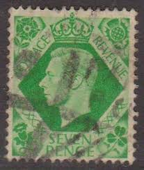 |
| eBay | GB90) 1937-1947 Great Britain King George VI Post Rev 9D Green ow473 | eBay | 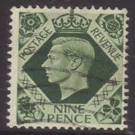 |
| Federal University of Agriculture, Abeokuta | GEORGE VI STAMP | 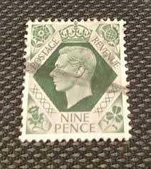 |
| eBay | Used Postage Morocco Agencies Stamps for sale | eBay | 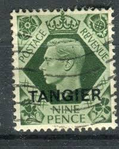 |
| Mystic Stamp Company | 248 - 1939 Great Britain, King George VI - Mystic Stamp Company | 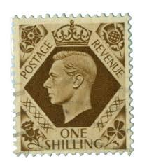 |
| eBay | GREAT BRITAIN 244 (SG471) - King George VI "1939 Emerald" (pf56638) | eBay | 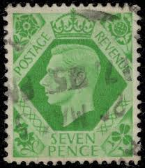 |
| eBay | 1937 7d SG 471 OVPT 'SPECIMEN' TYPE 30, fresh small part gum. (Only a few exi... | eBay | 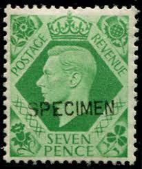 |
| lastdodo.com | Stamps from Tangier - British post office Stamp catalogue - LastDodo | 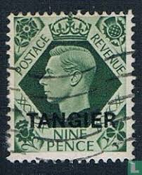 |
| eBay UK | BRITISH OC OF ITALIAN COLONIES GVI SG S7, 9d deep olive-green, FINE USED. | eBay UK | 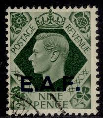 |
| eBay | Great Britain 1 Sh 1937-39 -- King George VI *used* (HBX) | eBay | 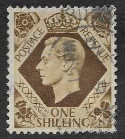 |
| esteschurch.org | 1/4 39 Piece Industrial Stamp Kit For Sale 39-Piece Industrial Stamp Set - 1/4 Inch Character Stamps With Hammerless Action 1/4 39 Piece Industrial Stamp Kit Ebay | 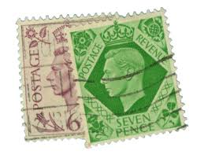 |
| ebid.net | GB 1939 KGV1 7d Emerald Green stamp SG 471 .(C485 ) on eBid United States | 225198150 | 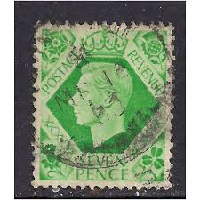 |
| Alamy | Great britain postage stamps hi-res stock photography and images - Alamy | 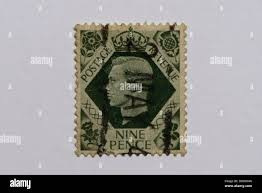 |
| Delcampe | British Occ. MEF - Middle East Forces 1943 single 9d George VI stamp from definitive set. These stamps of Great Britain overprinted MEF. | 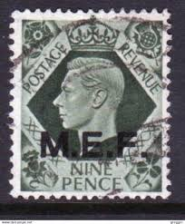 |
| Latinafy.com | Antiguo Sello Inglaterra India Postage Revenue Half 1/2 Anna | 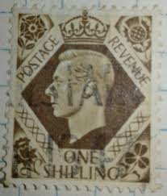 |
| Dreamstime.com | Postage Stamp Printed in United Kingdom Shows Caernarvon Castle, Queen Elizabeth II - High Value Castles - Predecimal Serie, Circa Editorial Stock Photo - Image of hobby, circa: 210224783 | 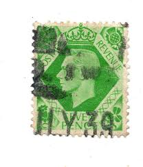 |
| Encyclopaedia Philatelica | Edmund Dulac - Encyclopaedia Philatelica | 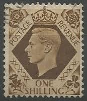 |
| eBay | United Kingdom Stamp 1939 George VI One Shilling | eBay |  |
| eBay | EARLY LOT OF 12 DIFFERENT MINT MH BRITAIN KING GEORGE VI STAMPS 1/2d-1 SHILLING | eBay | 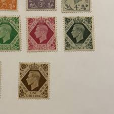 |
| eBay UK | GB 1939 SG473 KGVI 9d. DEEP OLIVE-GREEN POST OFFICE TRAINING STAMP - MNH | eBay UK | 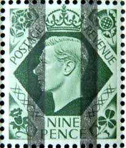 |
| eBay | Great Britain stamp 244 MNH | eBay | 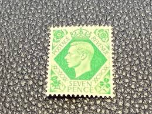 |
| eBay | WWII British Postal Agencies Middle East Force 1943 King George VI SG M17 | eBay | 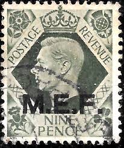 |
| eBay | BRITISH OC OF ITALIAN COLONIES GVI SG E21, 75c on 9d deep olive-green, M MINT. | eBay | 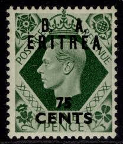 |
| iStock | British King George Vi Postage Stamp Stock Photo - Download Image Now - Postage Stamp, Black Background, British Culture - iStock | 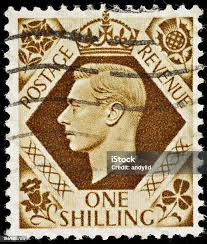 |
| Alamy | Portrait of king george vi hi-res stock photography and images - Page 8 - Alamy | 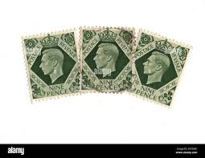 |
| Dauwalders | SG473var 1937-47 9d deep Olive-Green imperf imprimatur horizontal pair U/M | 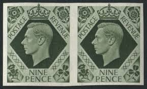 |
| eBay | 8961) 1: One Shilling Postage Revenue Stamp King George VI Great Britain 1939 | eBay | 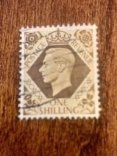 |
| eBay | Australia stamps - King George VI 3d Australian penny 195 1 Sg:AU 237d | eBay | 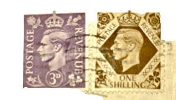 |
| eBay | Great Britain Offices in Africa Scott # 8 Used 1sh Brown King George VI Issue | eBay | 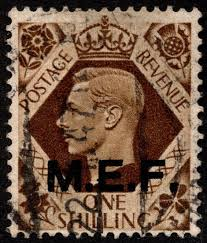 |
| eBay | Postage Revenue ~ King George VI ~ Green ½D Stamp ~ Posted/Used ~ c.1940's | eBay | 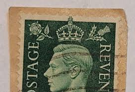 |
| eBay | Great Britain stamp 246 MH | eBay | 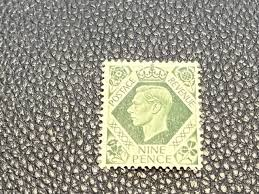 |
| eBay | Royalty 2.5p Denomination British Stamps for sale | eBay | 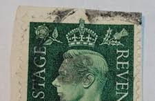 |
| eBay | Great Britain Offices in Eritrea Scott # 22 MH Surcharged Single 1950 | eBay | 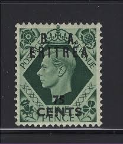 |
| eBay | Great Britain stamp 266 used | eBay | 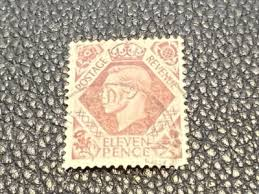 |
| eBay | Postage Revenue ~ King George VI ~ Green ½D Stamp (3 Ea) ~ Posted/Used ~ 1940's | eBay | 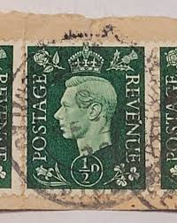 |
| eBay | Great Britain stamp 246 MNH | eBay | 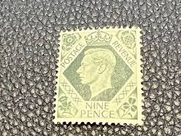 |
| Alamy | Seven and a half pound hi-res stock photography and images - Alamy | 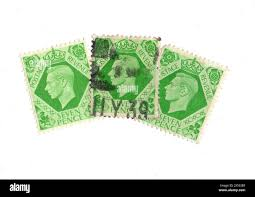 |
| eBay | Great Britain Stamp Scott #266, 11p, King George VI, Vio Brown, Used, SCV$2.00 | eBay | 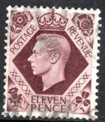 |
| Dreamstime.com | King George VI Green Stamps from Great Britain. Editorial Image - Image of pound, postage: 317281495 | 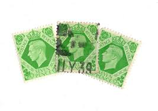 |
| eBay | 5 - 1937-1939 United Kingdom Stamps - SG #475 - Geo. VI - Used | eBay | 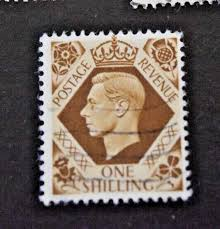 |
| eBay | CANADA Postage ~ King George VI ~ Green ½₵ Stamp ~ Cancelled/Posted ~ 1937 ~ G23 | eBay | 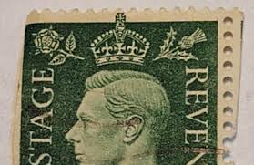 |
| ebid.net | jamaica stamps hm sg27 sg 27 a on eBid India | 191166739 | 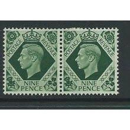 |
| eBay | Blue Rare stamp 2 1/2 Penny King George VI - Vintage Collectible USED NO HINGE | eBay | 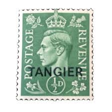 |
| eBay | Postage Revenue ~ King George VI ~ Green ½D Stamp ~ Posted/Used ~ c.1940's ~ A03 | eBay | 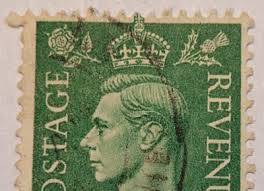 |
| eBay | CANADA Postage ~ King George VI ~ Green ½₵ Stamp ~ Cancel/Posted ~ 1937 ~ Y05 | eBay | 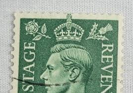 |
| eBay | Postage Revenue ~ King George VI ~ Green ½D Stamp ~ Posted/Used ~ c.1940's ~ A09 | eBay | 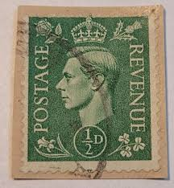 |
| eBay | Rare Queen Elizabeth II 1959 Postage Revenue Stamp 3d Purple Mint Condition | eBay | 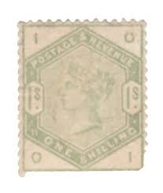 |
| eBay | 1948 Singapore Cover to London, Special "Anglo-Saxon Petroleum" Perfins to Texas | eBay | 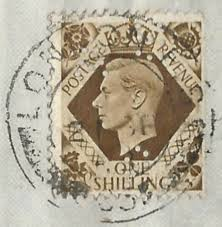 |
| eBay | Italian Eritrea #SGE22 MNH 1950 B A Overprint British Occupation [23] | eBay | |
| eBay | CANADA Postage ~ King George VI ~ Green ½₵ Stamp ~ Cancel/Posted ~ 1937 ~ Y06 | eBay | |
| eBay | Great Britain Offices in Tangier, Scott #515, Ovpted 1/2p King George VI, MLH | eBay | |
| eBay | CANADA Postage ~ King George VI ~ Green ½₵ Stamp ~ Posted ~ 1937 ~ B176 | eBay | |
| eBay | Postage Revenue ~ King George VI ~ Green ½D Stamp ~ Posted/Used ~ c.1940's ~ O31 | eBay | |
| eBay | GREAT BRITAIN SG-473, SCOTT # 246, USED, 10 STAMPS, GREAT PRICE! | eBay | |
| eBay | SG 196 1 dull green. Superb used part Cardiff Docks CDS. Good colour | eBay | |
| eBay | SG 125 6d Grey Very fine used with a London CDS 13th June 1873 CAT | eBay | |
| eBay | Great Britain, Postage Stamp, #243, 246 Mint Hinged, 1939 King George (AB) | eBay | |
| eBay | Canada/PRINCE EDWARD ISLAND 1862 SG 25 Perforation 12 CANC F | eBay |